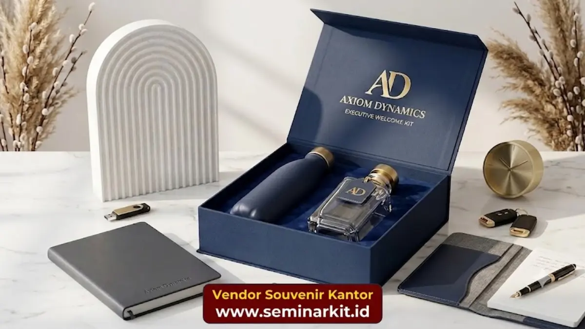

Ide souvenir perusahaan kreatif mencakup barang fungsional bertema unik, produk ramah lingkungan, hingga souvenir custom yang mencerminkan identitas perusahaan secara khas dan mudah diingat penerima.
- Souvenir kreatif lebih mudah diingat dibandingkan barang generik.
- Produk ramah lingkungan semakin diminati sebagai souvenir perusahaan.
- Souvenir custom sesuai tema acara meningkatkan kesan personal.
- Kombinasi fungsi dan desain unik meningkatkan nilai souvenir.
- Penyesuaian ide dengan target penerima tetap menjadi prioritas utama.
Apa Saja Ide Souvenir Perusahaan yang Sedang Diminati?
Ide souvenir perusahaan yang sedang diminati saat ini mencakup produk ramah lingkungan, perangkat kerja portabel, dan barang dengan desain minimalis yang mudah dipadukan dengan gaya hidup penerima.
Beberapa kategori yang populer:
- Produk ramah lingkungan seperti tumbler stainless atau tas kain.
- Perangkat kerja portabel seperti power bank dan organizer kabel.
- Alat tulis premium dengan desain minimalis.
- Perlengkapan kerja hybrid seperti stand laptop lipat.
- Paket souvenir bertema kesehatan seperti botol minum dan tote bag olahraga.
Tren ini mencerminkan pergeseran preferensi penerima terhadap barang yang mendukung gaya hidup praktis dan berkelanjutan, bukan sekadar barang dekoratif tanpa fungsi jelas.

Bagaimana Souvenir Ramah Lingkungan Menjadi Pilihan Kreatif?
Souvenir ramah lingkungan menjadi pilihan kreatif karena mencerminkan kepedulian perusahaan terhadap keberlanjutan sekaligus memberikan nilai tambah fungsional bagi penerima.
Contoh souvenir ramah lingkungan:
- Tas belanja berbahan kain daur ulang.
- Tumbler pengganti botol plastik sekali pakai.
- Notebook dari kertas daur ulang.
- Sedotan stainless sebagai pengganti sedotan plastik.
- Peralatan makan portabel ramah lingkungan.
Pemilihan souvenir jenis ini juga dapat memperkuat citra perusahaan sebagai entitas yang mendukung praktik bisnis berkelanjutan, khususnya bagi perusahaan yang menargetkan audiens dengan kesadaran lingkungan tinggi.
Bagaimana Membuat Souvenir Perusahaan Terasa Personal?
Souvenir perusahaan dapat terasa lebih personal dengan menambahkan elemen kustomisasi seperti nama penerima, warna khas perusahaan, atau desain yang relevan dengan tema acara tertentu.
Cara menambahkan sentuhan personal:
- Cetak nama atau inisial penerima pada barang tertentu.
- Gunakan warna dan tipografi konsisten dengan identitas merek.
- Sesuaikan desain dengan tema acara, misalnya ulang tahun perusahaan.
- Tambahkan pesan singkat dalam kemasan souvenir.
- Pilih kemasan yang rapi dan mencerminkan kualitas premium.
Sentuhan personal semacam ini meningkatkan kesan bahwa souvenir dipersiapkan secara khusus, bukan sekadar barang massal tanpa perhatian pada detail.
Souvenir Apa yang Cocok untuk Berbagai Jenis Acara Bisnis?
Jenis souvenir yang cocok berbeda-beda tergantung acara, misalnya souvenir formal untuk seminar korporat, souvenir fungsional untuk pameran, dan souvenir bertema untuk perayaan internal perusahaan.
Rekomendasi berdasarkan jenis acara:
- Seminar atau konferensi: notebook premium, pulpen eksklusif, tas dokumen.
- Pameran atau expo: gantungan kunci, totebag, merchandise ringan lain.
- Ulang tahun perusahaan: souvenir bertema dengan desain khusus event.
- Penghargaan karyawan: barang berkualitas lebih tinggi sebagai simbol apresiasi.
- Acara amal atau CSR: souvenir ramah lingkungan yang mendukung pesan acara.
Menyesuaikan jenis souvenir dengan konteks acara membantu memastikan barang yang diberikan relevan dan tidak terkesan asal pilih.
Ide souvenir perusahaan kreatif sebaiknya mempertimbangkan fungsi, tren, serta relevansi dengan tema acara dan target penerima.
Souvenir ramah lingkungan dan sentuhan personal dapat meningkatkan kesan positif terhadap perusahaan.
Simak juga panduan cara memilih souvenir perusahaan dan tips biaya pemesanan souvenir perusahaan dalam jumlah besar untuk perencanaan yang lebih matang.

Banner promosi: klik gambar untuk langsung terhubung ke WhatsApp tim sales.